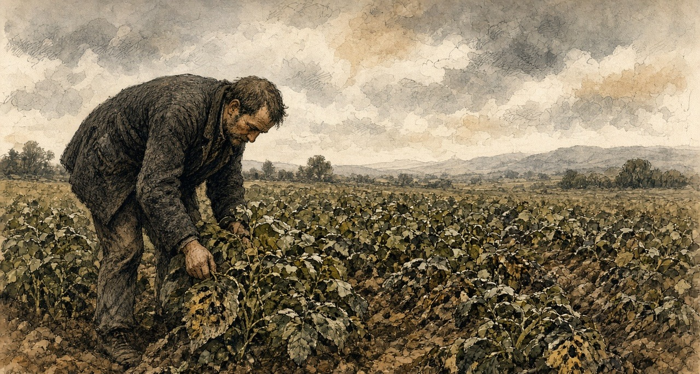
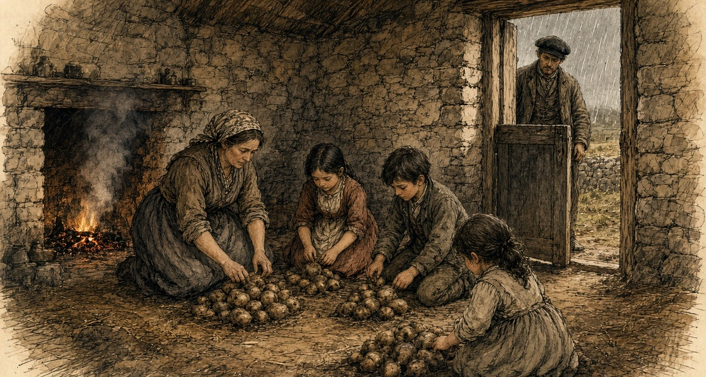
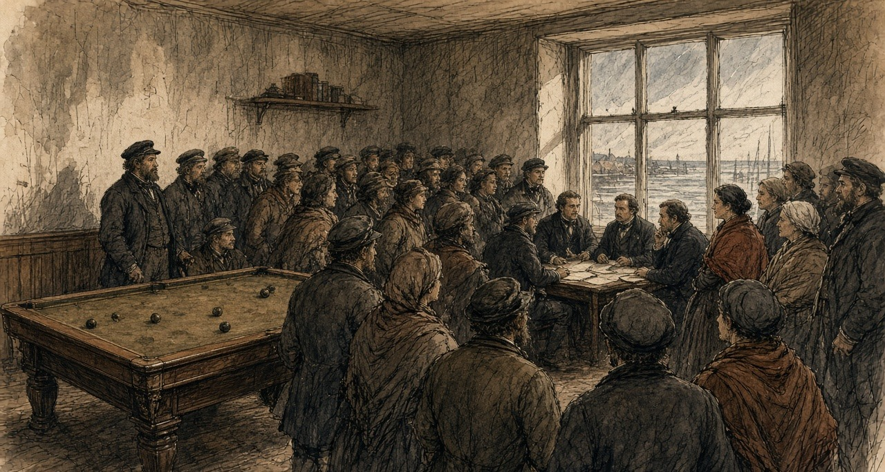
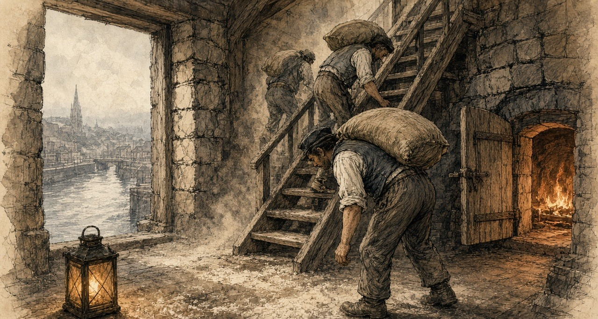
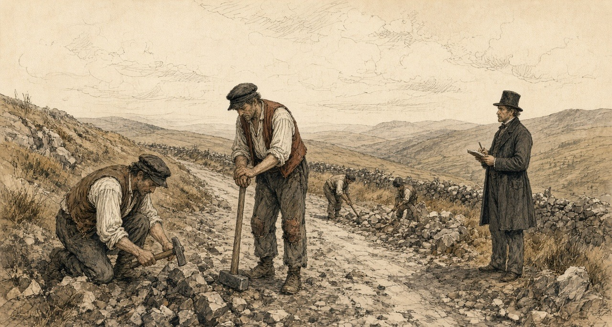
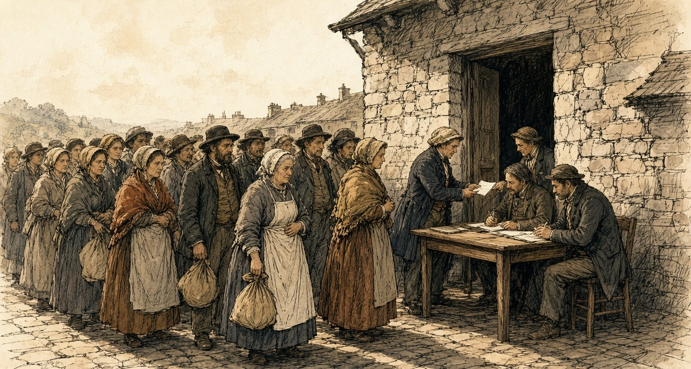
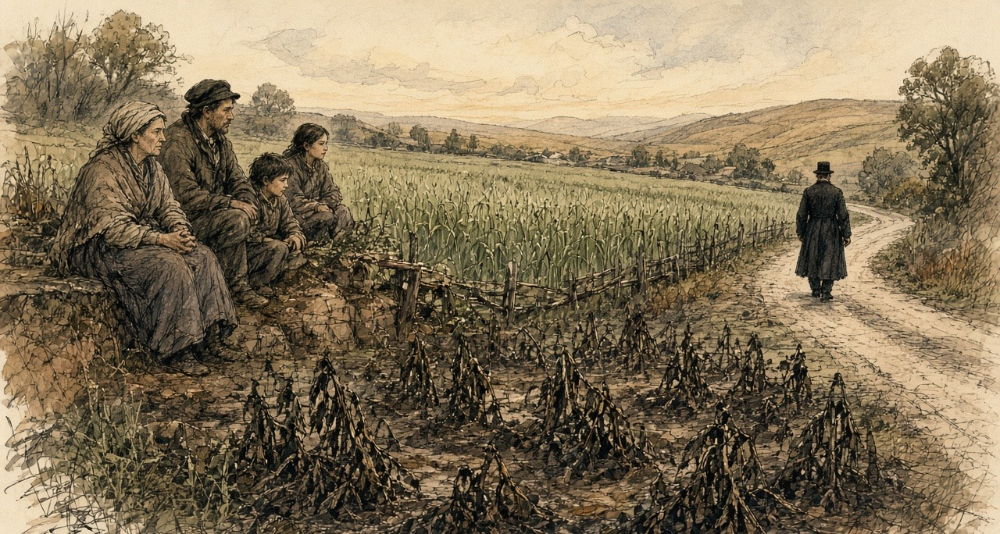

Chapter 8
Indian Meal at a Penny a Pound, 1845–1846
London, Dublin, Cork, the county of Clare and Killarney, August 1845 to August 1846
On Saturday, 23 August 1845, the Gardeners' Chronicle, the London weekly that John Lindley edited, opened its leading column with a disease. "A FATAL malady has broken out among the Potato Crop. On all sides we hear of the destruction that has overtaken this valuable product, excepting in the north of England. In Belgium the fields are said to have been entirely desolated. There is hardly a sound sample in Covent Garden Market." The paper reached for the language of the cattle plague. "In fact the murrain seems to have been transferred from cattle to Potatoes."
It described what a grower would see. "The first obvious sign is the appearance on the edge of the leaf of a black spot, which gradually spreads; then gangrene attacks the haulm, and in a few days the latter is decayed, emitting a peculiar and rather offensive odour. When it is severe the tubers also decay." Lindley blamed the weather, the cold and the incessant rain of that summer and the want of sun. "The cause of this calamity is, we think, clearly traceable to the season."

Three weeks later the presses were held for a late notice. "We stop the Press, with very great regret, to announce that the Potato Murrain has unequivocally declared itself in Ireland. The crops about Dublin are suddenly perishing." The same issue printed methods for turning potatoes into flour, and the notice ended on that. The conversion, the editor wrote, "becomes then a process of the first national importance; for where will Ireland be, in the event of a universal Potato rot?"
In Ireland the potato was the crop that was eaten. Sir Randolph Routh, the Commissary-General who would run the Government's food depots there, explained the other crops to the Treasury in January. "Oats and wheat and barley are not considered as food by the people; they are usually grown as means of payment for rent."
* * *
Whitehall, Netherby and Dublin Castle, October 1845
Sir Robert Peel wrote to the Home Secretary, Sir James Graham, from Whitehall on 13 October. He had the Irish reports in front of him and he gave his rule for them first. "There is such a tendency to exaggeration and inaccuracy in Irish reports that delay in acting upon them is always desirable." In the same letter he wrote down where his mind was going. "The removal of impediments to import is the only effectual remedy." The impediments were the Corn Laws, the duties that kept foreign grain out of the United Kingdom and kept the price of home-grown grain up for the men who owned the land.
Graham answered the same day from Netherby. Indian corn could be had from the United States cheaply, he wrote, if the people would eat it, "but unfortunately it is an acquired taste."
In Dublin the Lord Lieutenant, Lord Heytesbury, had Robert Kane of the Royal Dublin Society at work, and two professors sent over from England, Lindley himself and the chemist Lyon Playfair. On 24 October Heytesbury told Peel what made the counting impossible. "We constantly receive satisfactory reports of the state of the potatoes when dug, and learn a few days after that they have all rotted in the pits."
The three commissioners signed their first report the same day, in the Board Room of the Royal Dublin Society. The Irish Government printed it and sent it out through the constabulary to every part of the country. Moisture, they wrote, hastened the disease, and it passed from potato to potato by contact. People were not to pit the crop "in the usual way." They were to dry the potatoes, sort them, and lay them in single layers about two inches apart, with turf ashes or dry turf mould or sand or burned clay between, no more than four layers deep, and cover the heap with clay, straw or heath. "We particularly recommend that Potatoes should not be removed into inhabited rooms." They called the disease "an enemy whose history and habits are yet but imperfectly known."
Their second report, of 29 October, went further. Chloride of lime and salt, which people had been trying, only hastened the rot. Potatoes slightly diseased could be boiled and eaten. When "the tubers have acquired a disagreeable smell, their influence on the system is more questionable." The starch could be grated and washed out of a bad potato, a thing they found "already practised in most parts of the country," and they warned what starch alone would do. "An animal fed merely on starch dies of starvation, nearly, if not quite so soon, as if totally deprived of food." The rest of the potato could be cut in two or three and dried on a corn kiln, or on hurdles laid over a lime kiln, or on hurdles set on stones two or three feet high over a slow turf fire.
* * *
West Clare, near Kilkee, November and December 1845
Before the sun was over the hill on the Tuesday morning, smelled I it through the chink of the window-shutter. Not like a beast dead in the furze—for a heavy greasy stink is on a dead sheep—ach a sweet, cold, cellar-like smell, like cabbage-water that stood a month in a wooden tub. Put I not my brogues on me. Out over the ditch into the two-acre garden went I in my bare feet. And the stalks that were standing up to my waistband on the Sunday, purple in the blossom, were lying flat along the drills as if someone had gone over them with a boiling kettle. When I put my toe under a stalk to lift it, parted the stem from the root with a wet slip, and stayed the black slime of it between my toes. Dug we them in the rain and the police paper stuck inside the band of my hat. Read a sergeant of the constabulary it out at the chapel gate after last Mass—three gentlemen in Dublin that never handled a loy in their lives telling the parish of Querrin how to pit potatoes. Two inches apart, says the paper, and dry turf-mould between them, and bring them not into the dwelling-house. Where was dry turf-mould to be got at me in the November when the bog-holes were lipping over the road, unless I took the dry turf off the loft that was saved at us for the winter's fire? And where was I to sort forty barrels of Minions and the sleet driving level off the Atlantic, if not on the kitchen floor between the dresser and the bed? On our hams in the firelight sat we for three nights, the woman and the four childer and myself, and the rushlight stuck in a cleft stick in the wall. Takes a man a potato that looks as sound as a pebble on the strand, and presses he his thumb against the rose-end of it. Gives the skin with a little creak under the nail, is the brown in it. Got my little Mary, that is seven, the knack of it before any of us. Good, bad, good, bad—flinging the soft ones into the skib by the door until the small wrists were cramping on her, and the stink of the bruised pulp had the dog whining under the settle. Grated we twenty stone of the spotted ones on a piece of tin that I punched full of holes with a tenpenny nail and nailed to a board. Rubs a man the raw tuber up and down on the jagged tin until the skin is grated off his own knuckles, and run the bloody water and the black potato-juice down into the tub together. After three washings is a cake of white starch on the bottom, as hard and cold as a flagstone. Baked my wife a griddle-cake of it on the Thursday. White as a gentleman's biscuit was it, and chewed it like wet leather between the teeth. An hour after we ate it, was the little boy rolling on the hearthstone and his two hands knotted in the wool of his belly, roaring with the wind that was swelling him up like a blown calf, and his belly as empty of nourishment as a drum. Out in the haggard, stacked high on stone staddles and the clean straw rope networked over them to keep the wind off, stand six stacks of white oats that I reaped with my own hook. Took I a sheaf of them down and shelled I the grain into the quern to make a fist of meal for the child, would the driver have the keeper in my kitchen before dark at two shillings a day to watch the other five stacks for Mr. Westby's rent.

* * *
London and the Isle of Wight, November and December 1845
Lindley and Playfair went back to London and on 15 November wrote to Graham. They had been through the country between Dublin and Drogheda, through the counties of Dublin, Louth, Meath and Westmeath and part of Kildare. They gave him a number. "One-half of the actual Potato crop of Ireland is either destroyed or remains in a state unfit for the food of man. We moreover feel it our duty to apprize you, that we fear this to be a low estimate."
They named places. They had seen "a large field at Skerries, where not more than one Potato in twenty was found lying in a state which would admit of preservation; and another, near Oldbridge, in which, from the want of skill in the owner, all appeared to be perishing in the pits; and we have proof that these are not rare examples." An eighth of the crop had to be held back for seed. That left, they wrote, "only three-eighths of the crop" that could "be at this moment assumed to be available as food." On the question every official wanted answered, when the hunger would begin, they declined to guess. "We are not sufficiently acquainted with the habits of the Irish peasantry to be able to state at what time the want of food from the failure of their Potatoes may be first expected."
Heytesbury wrote again two days later. "How rely upon any calculation when the potatoes are perishing in the pits?"
The Cabinet had broken up on 6 November without agreeing to open the ports. Peel had put a sum before it on 31 October. A vote of credit for Ireland, "for instance, for 100,000l.," would raise the question of the Corn Laws the moment it was asked for. He then spent a sum of that size without asking Parliament for it at all. "Some days after the separation of the Cabinet on the 6th of November," he wrote afterwards, "I resolved (acting in concert with Sir James Graham and Mr. Goulburn) to take the unusual step of authorising a very large purchase of Indian corn in the United States on account of the Government." Goulburn was Chancellor of the Exchequer. The order went "secretly," through Barings, the London bank, "acting on behalf of the Treasury, that department undertaking the whole pecuniary responsibility." Among his purposes, he wrote, was "to habituate the Irish people to the consumption of a novel species of food."
The suggestion had come in on 5 November from Commissary-General Hewetson at Southampton. He wrote to Peel of his "long residence in North America as a public officer," and said that Indian corn meal, "by prompt and secret measures," could "be cheaply and readily purchased to any extent." Peel thanked him four days later.
The Treasury put it on paper on 9 December. The First Lord and the Chancellor of the Exchequer had "entered into an arrangement with the house of Messrs. Baring to provide a supply of Indian corn and meal to the extent of 100,000l., to be shipped from the United States and transmitted to Cork." The money was to come out of the Commissariat Chest, the army's own account for supply. The corn was to be stored in the naval storehouses at Cork. Hewetson was sent there to receive it.
Routh, who had been put on the Relief Commission in Dublin at the end of November, took no office. He worked from his hotel, he explained, because an office would tell people that relief was coming. On 20 December he wrote that he was glad to have kept the Indian corn secret, "of which no one has any idea or expectation."
In those same weeks Peel lost his government and got it back. Lord John Russell, the Whig leader, wrote from Edinburgh on 22 November that the Corn Law was "the blight of commerce and the bane of agriculture." Peel went to the Queen at Osborne on 5 December and resigned. Lord Stanley, in his own Cabinet, would not follow him on the corn duties. Russell tried to form a ministry and could not. On 20 December the Queen saw Peel at Windsor. "So far from taking leave of you, Sir Robert, I must require you to withdraw your resignation, and to remain in my service." He went back to work the same day. On 26 December he wrote to the Princess Lieven, "I feel like a man restored to life after his funeral service had been preached."
* * *
The Billiard Room, Kilkee, Saturday, 10 January 1846
The Relief Commission wanted its first local meeting to set the pattern for the rest. The pattern was money from the district first and help from the Government after. Kilkee was chosen, and the meeting was put off to Saturday, 10 January, so that more of the public could come. It was held in the Billiard Room.
Mr. H. Burton of Carrigaholt Castle took the chair. Robert Fitzgerald of Kilkee was vice-chairman. The Reverend M. Comyn, the parish priest, was there, and Dr. Tuite. The people of the parishes came in such numbers that few of the proprietors could get into the room. In the printed account the name of the man who brought them is a blank. "—— succeeded in filling the room assigned for the meeting with so large a body of the people, that very few of the proprietors could obtain access to it."

The meeting passed its resolutions. One was about the food. "The potatoes having now become so unfit for human use, that even the cattle are beginning to loathe them," the people were to be advised to stop eating them. Another was about the animals they had been feeding the rot to. "Pigs and fowl fed on diseased potatoes are found, on being slaughtered, to have their livers and intestines so singularly affected and rotten as to be convertible to no human use whatever."
The memorial for public works asked for a safe harbour in the bay of Doonbeg, for the bogs of the parishes to be drained, for roads along the cliffs, for a landing for the Kilkee fishermen's canoes and a pier at Movasta. It spoke for the labourers of the coast, who "have no objection or fear of cold from working in salt water in the most inclement weather." The memorialists were afraid to plant potatoes again in the old ground, "fearing it retains the malaria that has been so fatal the last season." A second memorial, from the proprietors, covered the parishes of Moyarta and Kilballyowen, the parishes of the Reverend Malachi Duggan. It said "that there are numbers now in actual want of food, and without the means of purchasing it."
Nobody offered money. Routh reported to the Treasury on 15 January that the meeting "has in a great measure failed." The labourers of the coast had offered to work in salt water in January. Hamilton, the agent, told Routh that the proprietors could neither advance funds nor give security for a loan.
* * *
Haulbowline and the Lee Mills, Cork, January to March 1846
Hewetson reached Cork in the first days of January and took the naval stores on Haulbowline Island in the harbour. On 12 January he was waiting on ships. The wind was "blowing hard from the south-east." He hired weighers at a guinea to twenty-five shillings a week. A Cork labourer, he noted, earned one shilling and threepence a day.
The Treasury sent its rules to Routh on 26 January. They were long and they came down to a few points. The landowners and ratepayers of a district were answerable, in law and in morals, for its poor. The Government would only help. Food was to be sold at cost and for ready money. Work was to be paid by the task, and no more than would buy enough food. Free relief was for those who could not work, and only when the workhouse was full. Every work was to be one that could be shut down at once.
The corn came in. Hewetson took the Lee Mills on the river and set every pair of stones to it. On 24 February he wrote that fourteen pairs were grinding, with one pair always with the dresser, and that he expected a thousand sacks a week, "each sack 20 stone, or 280 pounds." "Four extensive kilns are at work night and day." The ship Atlas had come into Cove with her corn heated in the hold, "in a bad state from heat, even to germinating." He meant to save what he could of it. The quartern loaf in Cork was eightpence.
He reported on the men who carried the sacks. "We have worked the people employed so hard, that they struck three times, to the great dismay of our contractor for unloading and lofting the corn: it is severe labour; 1100 sacks per day occasionally, each 280 lbs. in weight. The Cork merchants are quite astonished at our dispatch; they think 600 per day heavy work."
* * *
The stores, Cork harbour, February 1846
Two hundred and eighty pound is in the sack, and woven so thin and hard is the jute of the American bag that the seam of it cuts through a frieze shoulder-cape in three hours and saws straight into the meat of your neck. Lift you it not with your arms; if you put your arms to it, is the rupture on you before the dinner-bell. Under the hatch-coaming of the Atlas stand you while swings the winch-man the sling over, and tip two of the hold-gang the mouth of the sack onto the pad of straw that is tied behind your neck, and take you the twenty stone on the seventh bone of your spine and your chin driven down into your breastbone. Up the plank you go—eighteen inches wide, slick with the harbour drizzle and the yellow dust—up out of the ship and across the quay and up the two-and-thirty wooden steps to the third loft of the Lee Mills. Alive was that corn in the Atlas. When they took the main hatches off her at Haulbowline, came a steam up out of her belly like the steam off a dunghill in the frost, and when you went down the ladder into the hold, took the heat the breath out of your throat. Had the grain at the bottom got the bilge-water in the gale off the Banks, and was it fermented together into cakes the size of millstones, and white roots sprouted three inches long matted through the yellow maize, and the smell of it like sour whiskey-wash in a still-house. Had we to take the iron shovels and the pickaxes to quarry it out of the ribs of the ship before we could bag it. Rose the green mould-dust up in the lantern-light so thick that when we came up on deck at six o'clock, were we coughing green gobs into the tide. A thousand sacks a day wanted Hewetson out of us, and the kiln-fires roaring night and day under the perforated tiles to bake the sprout out of the rotten corn before it went between the French burrs. The third time we threw the sacks down on the quay and stood with our arms folded, came the contractor out of the counting-house and his watch in his hand, and pointed he down the river road to where two hundred countrymen from Kerry and West Cork were standing outside the iron gate in the rain, their faces the colour of tallow, watching the bread-crusts in our coat pockets. One-and-threepence a day, says he, and five hundred men are at the gate that will carry those sacks for tenpence. Back up the plank went we. By four in the afternoon had the sweat and the yellow meal-dust worked into the raw galls on my neck and set like plaster-of-Paris, so that every time I tipped a sack at the hopper, tore it the scab off the flesh. At the gate that night took I my fifteenpence and bought I two quartern loaves at eightpence the piece. A penny out of yesterday's wage on top of today's was that. When I took my shirt off by the candle at home, had my wife to soak the linen over my shoulder with warm water from the kettle before she could peel it off the blood.

* * *
Dublin, Limerick and Carrigaholt, March and April 1846
On 6 March Routh, by then in an office at the Castle, wrote down a sum. "The price of labour is 8d. per diem; the price of the meal 1d., or thereabouts, per lb." A day's ration of the meal would cost twopence to twopence-halfpenny. He warned against paying a man in meal at that rate when his work was worth eightpence in money. The people were used to potatoes, he wrote, "which satisfy by repletion, and a more nourishing substance, which does not fill the stomach, leaves a craving sensation, a want of support and strength, as if they had not eaten enough."
The Treasury had already put the difficulty to him on 4 March. Pitched above oatmeal, the meal would earn the Government no thanks. Pitched much below, it would draw the custom of the whole country to the depots and damage the private trade.
On 13 March the Treasury fixed it. Their Lordships set the price at which the Indian corn meal was to be disposed of "at 1d. per pound," and desired "that all issues to Local Committees and others may be made at that price." "Prompt payment may invariably be required." Routh put the Adirondack's meal at ten shillings and sixpence the hundredweight, a little over a penny a pound. Hewetson had asked for the penny himself, from the Lee Mills, as one fixed rate for the whole country, and he had written down what it would cost. At that rate, with the steamers and the rest, "the balance sheet at the close of this service will be much against the public." In Sligo, the commissary there found Indian meal from Armagh selling at eleven shillings to eleven and sixpence the hundredweight, and oatmeal at sixteen.
A large issue went out at Limerick at the penny. By 2 April Routh wanted it back. "The demands on our depots are increasing fast, and the inconvenient precedent of the large issue at Limerick, at 1d. per lb. holds out an invitation to them, which I find it difficult to combat." "I must raise the price to 11s. per cwt., otherwise the whole country will be on us." The dealers, he wrote, were holding back their stocks for May, June, July and August. The printer had been told to stop giving out the Indian Corn Pamphlet, the instructions for cooking the meal, and sell it at a halfpenny. "The demand is beyond credibility."
Captain Mann, R.N., the Commission's officer at Kilrush, went down the peninsula in April. At Kilbaha seed potatoes were sixpence a stone, two pounds a barrel of ninety-six stone. At Carrigaholt he found the distress among the tenants and labourers of Knock "fully borne out," and ordered four more barrels of Indian meal sold there at one shilling and threepence a stone, fourteen pounds for fifteen pence. Mr. Burton and Mr. Duggin were willing to buy meal for the poor, but there was "Not a person but themselves resident who could contribute, and I am sorry to say that positive refusals to contribute from landlords non-resident were shown to me." "It is the general opinion of respectable persons," he wrote, "that but for the Indian corn meal that is in, and daily arriving in the river, potatoes would be 12d. per stone."
In some parts of Clare, "such as Kilkee and Kilrush," Routh reported in March, there seemed to be "a determination to subscribe nothing." The Board of Works then had 1,600 men at work in the county. On 31 March he wrote that it had 5,487. In Ennis two hundred pounds had been raised in one day. At Kilrush they were beginning to subscribe. "Colonel Vandeleur sent down 50l. yesterday."
Commissary-General Coffin wrote from Limerick on 11 April that he was "so thoroughly persuaded of the general truth of the principles laid down by Burke, in his Thoughts and Details on Scarcity," that he excused the Government's interference rather than praised it. Burke's maxims worked, Coffin went on, only for those who had an interest in the struggle of the market, "and the unfortunate Irish cottier has none. His condition excludes him from the circle in which commerce revolves, and as his labour avails him only for the direct production of the food on which he depends for subsistence, the failure of that food leaves him incapable of profiting by the resources of the market, and consequently liable to starve in the midst of plenty."
In Tipperary that month food was seized around Clonmel and Carrick-on-Suir. Deputy Commissary-General Dobree wrote from Waterford on 24 April that the crowds "confined their outrages to the robbery of food, and dispersed immediately on the arrival of the military." The magistrates ordered the soldiers to fire. The commanding officer "declined complying with the magistrates' order to fire, as he felt he had force to quell the riot, and seize the ringleaders, without bloodshed." After that, Dobree wrote, no one tried to move food through the country "without a strong escort." Clonmel subscribed five hundred pounds, Routh reported, and the Lord Lieutenant matched it. At Carrick-on-Suir a crowd attacked the men on a Board of Works road, carried off their tools, and told them not to work for less than one shilling and sixpence a day. The Board paid tenpence. Lieutenant-Colonel Jones, the chairman of the Board of Works, wrote to the Treasury on 18 April. The disturbances "were not famine riots, but a regular set to for plunder. I understand the women were all provided with bags, and as soon as they filled them with meal, off they started."
* * *
A relief road in the west, May to July 1846
Parliament had passed the Act on 5 March. Half the cost of a relief road was to come from the Treasury as a grant. The other half was to be presented on the barony and paid back by the ratepayers.
Put your eye on that road going up into the red bog behind Knock. Forty feet wide between the gripes, boxed with broken limestone, leading from the crossroads where lives no soul to the turf-bank where goes no foot, and stops it dead against a face of black peat six feet high, like a wall built across a doorway. Six weeks were we cutting down the hill at Caherlean to fill the hollow, and when rode the new engineer out from Ennis on the Wednesday, looked he at his paper and said he the gradient was wrong, and set he the two hundred of us to wheeling the same stones back up the hill to fill the cutting we had just made. Has a man that ate fourteen pound of boiled Lumpers a day since he was weaned a stomach on him the size of a three-gallon firkin; needs the bulk of the potato to press against the ribs until the brain thinks the work is done. Now take you a pound of this yellow American dust—Peel's brimstone, the boys call it—that we buy at the store for a penny. Because the woman has no knowledge of the nature of the foreign grain, boils she it twenty minutes in the pot, the way she would boil oatmeal, instead of the two hours it wants. Swallow you it down at dark. In the bottom of your belly lies it like a fistful of wet sea-sand, heavy and small, and grates every sharp, unburst flint corner of the maize against the lining of your guts as it goes through you. By the midnight begins the griping, and before the sky is grey are you out behind the cabin in the nettles three times, passing blood and raw yellow grit. When you lift the fourteen-pound sledge on the rock at seven, is a hollow under your breastbone big enough to put your hat in, and black spots dancing like midges between your eyes and the stone. In April, when we started, could Pat Sullivan wheel three hundredweight of quarry spalls up a greased plank at a trot and tip it without laying his handles down. Yesterday watched I him at the barrow. Bent he his knees to the shafts, and stood the tendons in his wrists out like cords under the loose brown skin, and stirred the barrow never from the rut. Stood he up and looked he at his two hands as if to a stranger they belonged, and sat he down on the upturned wheel and wept he like a weaning child while the check-clerk was calling the roll. Every other May since I was sixteen, was the reaping-hook wrapped in straw under my arm and the brogues tied round my neck, walking to Dublin for the fourpenny deck-passage to Liverpool and the hay-harvest in Cheshire. Four gold sovereigns sewed in your waistband would you bring home at Michaelmas to clear the rent. This year could I not leave the doorstep. Walks a man two miles from the parish, strikes the committee his name off the ticket-list, and gives the meal-dealer not a pound of meal on trust to the wife. Come you back from England in the October, would you find the door hasped on the inside and the four of them dead on the floor. Tenpence a day get we for moving a hill into a bog-hole, and gone up to two shillings the stone is the meal in the huckster's barrel because the Government shut the depot.

* * *
The House of Commons and the House of Lords, May and June 1846
The Corn Importation Bill had its third reading in the Commons at the sitting of 15 May. Benjamin Disraeli spoke against it, and against the use of Irish hunger as its reason. "The population is reduced to the lowest sources of subsistence. Admitted; but how do they gain even their potatoes except by cultivating the soil, and by producing that wheat and those oats which they send to England? I should be very glad if that wheat and those oats remained in Ireland."
Mr. Hudson, a protectionist, gave the House the price of wheat at Burlington, thirty-eight shillings and tenpence, and said it was "so far from any sign of famine manifesting itself." Peel answered for November. "I did feel in November last that there was just cause for apprehension of scarcity and famine in Ireland." The House divided. Ayes, 327. Noes, 229. Majority, 98.
In the Lords the Duke of Wellington, who had stayed in the Cabinet with Peel, told the peers on 28 May what would happen to them if they threw the Bill out against the Crown and the Commons. "Without the Crown or the House of Commons you can do nothing." The second reading carried, 211 to 164.
Both Houses voted on 25 June. In the Lords the Corn Importation Bill was "read a third time, and passed," with cries of "Not-content." In the Commons, the same night, the question was the Protection of Life (Ireland) Bill, the Government's measure against outrage. Richard Cobden told the House what Lord George Bentinck, the leader of the protectionists, had said the vote was for, as Cobden heard him: "it must be the object of every honest man to inflict summary punishment upon the traitor." Bentinck went into the lobby against the Bill. So did Disraeli, Lord John Russell, Daniel O'Connell and William Smith O'Brien. Ayes, 219. Noes, 292. Majority against the Government, 73.
On 29 June Peel told the Commons that he had resigned. The House had defeated him, he said, by "refusing to give to Her Majesty's servants those powers which they deemed necessary for the repression of outrage and the protection of life in Ireland." He gave the credit for repeal to one name, "RICHARD COBDEN." He ended on bread. "It may be that I shall leave a name sometimes remembered with expressions of good will in the abodes of those whose lot it is to labour, and to earn their daily bread by the sweat of their brow, when they shall recruit their exhausted strength with abundant and untaxed food, the sweeter because it is no longer leavened by a sense of injustice."
Under the Act the duties on wheat, barley and oats came down by stages, to a shilling a quarter from February 1849.
* * *
The meal stores, Killarney, Friday and Saturday, 10 and 11 July 1846
There were five carts of potatoes in the market at Killarney on the Saturday. Five carts with one horse each, for the town and all the country around it. The price on them was a price for the gentry.
Nine miles from the Gap of Dunloe walked I it, and the sixpenny-bit under my tongue so could no hand pick it out of my pocket in the press. When I came into the Kenmare road at three in the morning, was the street before the Market House solid with heads from wall to wall. Saw you not the cobblestones—ach the grey shawls of the women and the caubeens of the men packed together in the mist, and a low, steady humming noise coming out of four thousand throats. No shouting yet, ach the breath and the muttering of people that had no sleep on them. By ten o'clock was the July sun blazing down between the slates, and so tight was the crush that my two arms were pinned flat against my ribs. Could I not lift my hand to wipe the sweat out of my eyes. Had a woman from Glenflesk in front of me a dead child under her shawl. Knowledge was at me that dead it was by the way rolled the little head loose against my chest when the crowd surged, and the cold of its foot through the cloth against my wrist. And she would not let on nor work her way out, for lost she her place at the barrier, would the other three at home be dead before the Monday. The smell of us in that sun was the smell of unwashed wool soaked in famine-sweat, and sour breath, and the filth running down the legs of old men that stood twelve hours in their breeches without room to step aside. When threw the peelers the half-door open at the ticket-window, gave the street a heave like a wave hitting a rock, and was I carried twelve feet forward without my brogues touching the ground. Went my ribs crack against the oak post of the door. Spat I the sixpence into my palm, slimy with the blood where the edge of the silver had cut the inside of my cheek, and slapped I it down on the sill, and shoved a gentleman with his coat off and the sweat dripping off his whiskers a bit of blue pasteboard into my fist. Six pound, shouts he at me, and get out by the back lane. Six pound of dry meal tied in the tail of my shirt, to last seven mouths from the Saturday night to the Tuesday morning. Coming out through the archway by the shambles, made three ragged lads from the mountain a rush at the knot in my shirt with a clasp-knife, to slit the linen and catch the spill in their hats. Struck I the foremost one square in the mouth with my elbow, and felt I his loose teeth give under the bone of my arm, and ran I the three miles to the Flesk bridge with my two hands locked over my belly like a dog carrying a bone out of a fair.

The Killarney committee sent the Government a cheque for two hundred pounds that day, for twenty tons more. It had sold three thousand four hundred tickets the day before. On the Saturday it sold four thousand seven hundred and eighty-two. Mr. Saunders, writing for the committee, put the people who came to the store at about fifty thousand.
* * *
Banagher, the Killeries and Dublin Castle, June to August 1846
Captain Pole kept the depot at Banagher, on the Shannon. On 22 June he wrote to the Treasury in praise of the rules. They had said to the rich, "You shall have no cheap food, or help in money, unless you yourselves subscribe." Consenting, the rich had turned to the poor and said, "You, too, shall have no food unless you labour for it." He sold about a thousand pounds of meal a day over his own counter in small lots, to people who came twelve miles. July, he wrote, "bears the name of 'the meal month.'"
A small farmer walked twelve miles to Pole's room with a letter from his priest. Pole asked him why he did not go to the committee near his home. The man said he would sooner starve. "By going to the Committee I proclaim myself a pauper — by coming to you I purchase from the Government, what the Government have provided for those who have suffered loss." Pole sold him a sack. On 13 July Pole wrote again. "My mighty storehouse, which once seemed to defy the appetite of whole counties, has been nearly emptied."
At Westport, Captain Perceval loaded twenty tons of meal on the steamer Vulcan at two in the morning of 22 June and sent fifty-five tons that day to Belmullet, Achill Bay, Dugort and Bull's Mouth. The commander of the revenue cutter Eliza called on him the same day. On his last trip to the Killeries a boat had pulled alongside and the men in it had begged food for one of their crew, who lay "stretched out half dead, and was unable to eat the bread" the commander gave him. He described the others in the boat, the "emaciated countenance and prominent eye-balls."
Lord John Russell was Prime Minister from the end of June. On 21 July his new Board of Treasury issued a Minute on the relief works. Their Lordships were "deeply sensible" that the measures of the past months were "at variance with the principles by which the well-being of society is ordinarily regulated," and that "great and permanent evils would be the result of any portion of the people becoming habituated to depend upon the Government for support." They had heard that the men on the roads were "preferring the receipt of an eleemosynary allowance under the name of wages, to higher wages proportioned to the labour performed." The inspectors were to cut the lists to those with "no other means of subsistence." "Secondly. The wages to be paid are also, in every case, according to the rule which has been repeatedly enjoined, to be fixed below the usual rate of wages in the neighbourhood." Works were to be closed, and each given a date to end.
On the day of the Minute, Jones sent the Treasury his weekly return. "What I foresaw early in the year is now verified; every man in the country who wants work, is forced upon us; we cannot help ourselves." In the week ended 18 July the Board had paid for 109,052 days' labour in Clare alone, more than in any other county. In the week ended 25 July the count for Ireland was 502,689 days, an average of 83,781 men on the works each working day.
The new Chancellor of the Exchequer would not refill the stores at Cork. The merchants' own cargoes had sat unsold, the Treasury said, because of the Government's sales. Committees were to buy from the private holders. Free donations stopped on 10 August. The depots stopped issuing meal on 15 August. In early August Routh cut the depot price from ten pounds a ton to nine, because the dealers were selling at nine and some at eight pounds ten.
The Treasury drew up the account. Indian corn and oatmeal, with freight, grinding and the rest, £185,432 7s. 7d. Against that stood the sales to 15 July, £70,171 6s. 5d., a further £60,000 of sales expected by 15 August, and the insurance recovered on the cargo of the Arab, lost at sea. The balance left on the public was £50,481 5s. 5d. The works under the first Act of the session had cost £452,727 14s. 8d., and half of that was to be paid back by the baronies. Of £852,481 9s. 7d. spent on relief in Ireland since November 1845, £494,851 7s. 9d. was to be repaid. The food bought came to 44,121,574½ pounds. At a pound a person a day, the statement reckoned, that would feed 490,240 people for three months. The census of 1841 had counted 8,175,124 people in Ireland.
* * *
The road from Cork to Dublin, 27 July to 3 August 1846
Father Theobald Mathew made the journey to Dublin and back that summer, and on 7 August he wrote to the Treasury from Cork. "On the 27th of last month I passed from Cork to Dublin, and this doomed plant bloomed in all the luxuriance of an abundant harvest. Returning on the 3rd instant, I beheld, with sorrow, one wide waste of putrifying vegetation. In many places the wretched people were seated on the fences of their decaying gardens, wringing their hands and wailing bitterly the destruction that had left them foodless."

At Limerick on 4 August Major Simmonds reported on the grain. "Nothing can be finer than the corn crops now being cut."
The stalks are black again. A week ago they were green and high and in flower. Then the spots on the leaves, and the smell coming up off the field in the morning, and the stalks lying down.
I am sitting on the ditch. My wife is beside me. Below us the field is the field from last year.
The oats are coming ripe in the next field. The meal store is to shut on the fifteenth. The road is to shut on a day the inspector will name.
Important names
- Peel, Robert (12 mentions in this chapter): British Prime Minister who repealed the Corn Laws during the Great Famine in 1846.
- Russell, Lord John (4 mentions in this chapter): British Whig Prime Minister during the height of the Irish Famine (1846–1852).
- Graham, Sir James (4 mentions in this chapter): Home Secretary under Peel who received the Irish blight reports in 1845.
- Lindley, John (4 mentions in this chapter): Botanist and editor of the Gardeners' Chronicle who described the potato disease in August 1845.
- Heytesbury, Lord (3 mentions in this chapter): Lord Lieutenant of Ireland during the first blight season of 1845–1846.
- Disraeli, Benjamin (2 mentions in this chapter): Conservative MP who spoke against the Corn Importation Bill in the Commons in May 1846.
- Mathew, Father Theobald (1 mention in this chapter): Cork priest who wrote to the Treasury after traveling from Cork to Dublin in late July 1846.
- O'Connell, Daniel (1 mention in this chapter): Irish political leader who led the campaigns for Catholic Emancipation and the Repeal of the Union.
Sources
- The Gardeners' Chronicle and Agricultural Gazette, London, 1845: leading article of 23 August (the "fatal malady," the black spot, the haulm, the "offensive odour," Covent Garden, the cause "traceable to the season"); 13 September ("We stop the Press," the crops about Dublin, "where will Ireland be"); 1 November (the Commissioners Kane, Playfair and Lindley, and their first report, Board Room of the Royal Dublin Society, 24 October 1845, distributed by the constabulary: drying, sorting and layering in turf ashes, potatoes not to be taken into inhabited rooms); 8 November (second report, 29 October 1845: chloride of lime and salt, boiled diseased potatoes, the "disagreeable smell," starch extraction, the animal fed on starch, kiln-drying on corn kilns, lime kilns and hurdles over turf fires).
- Potatoes (Ireland). Copy of the Report of Dr. Playfair and Mr. Lindley on the present state of the Irish Potato Crop, and on the Prospect of Approaching Scarcity, London, 15 November 1845, addressed to Sir James Graham; presented to the House of Commons, February 1846, HC 1846 (28) (the counties visited, "one-half," Skerries and Oldbridge, three-eighths available as food, the habits of the Irish peasantry).
- Memoirs by the Right Honourable Sir Robert Peel, published by the trustees of his papers, Lord Mahon and Edward Cardwell. Part III, The New Government, 1841; Repeal of the Corn Laws, 1845-6. London: John Murray, 1857 (Peel to Graham, 13 October 1845; Graham to Peel, 13 October 1845; Heytesbury to Peel, 24 October and 17 November 1845; Peel's memorandum read to the Cabinet, 31 October 1845, on a vote of credit "for instance, for 100,000l."; the purchase of Indian corn through Barings after 6 November; Russell's Edinburgh letter, 22 November 1845; Peel's resignation at Osborne, 5 December 1845; Lord Stanley; the Queen's words at Windsor and the resumption of office, 20 December 1845; Peel to the Princess Lieven, 26 December 1845).
- Correspondence explanatory of the Measures adopted by Her Majesty's Government for the Relief of Distress arising from the Failure of the Potato Crop in Ireland. Commissariat Series and Board of Works Series. London: HMSO, 1846 (HC 1846 [735] XXXVII). Commissariat: Hewetson to Peel, Southampton, 5 November 1845, and reply, 9 November (p. 1); Treasury to Routh, 27 November 1845; Treasury Minute, 9 December 1845 (Barings, 100,000l., Cork, the Commissariat Chest); Routh, 3 and 20 December 1845 (the hotel; the secret corn); Routh, 1 January 1846 (oats and barley grown for rent); Hewetson, Cork, 12 January 1846 (Haulbowline, weighers' and labourers' wages, the wind); Routh, 15 January 1846, with the resolutions and memorials of the Kilkee meeting of 10 January (pp. 9-13); Treasury instructions to Routh, 26 January 1846; Hewetson on the price and the balance sheet (p. 64); Hewetson, Cork, 24 February 1846 (the Lee Mills, the kilns, the Atlas, the quartern loaf, the strikes, 1,100 sacks of 280 lbs.); Treasury to Routh, 4 March 1846, on the price to be fixed (p. 54); Routh, 6 March 1846 (the price of labour and of meal, the ration, the "craving sensation," p. 56); Routh, 9 March 1846 (the Adirondack's meal at 10s. 6d. per cwt.), with Sligo prices; Treasury Minute, 13 March 1846 (1d. per pound, prompt payment, p. 64); Routh, 2 April 1846 (Limerick, 11s. per cwt., the Indian Corn Pamphlet, p. 88); Routh on Kilkee and Kilrush and the 1,600 men (p. 79) and, 31 March 1846, on the 5,487 men in Clare, Ennis and Colonel Vandeleur (p. 84); Captain Mann, Kilrush, 11 April 1846 (Kilbaha, Carrigaholt, 1s. 3d. per stone, Mr. Burton and Mr. Duggin, the refusals of non-resident landlords, p. 98); Coffin, Limerick, 11 April 1846 (Burke's Thoughts and Details on Scarcity, "starve in the midst of plenty," p. 99); Jones, 18 April 1846 (Tipperary, Carrick-on-Suir, 10d. a day, p. 109); Routh, 17 April 1846 (the Clonmel subscription); Dobree, Waterford, 24 April 1846 (Clonmel, the order to fire, the escorts, p. 122); Captain Perceval, Westport, 19 June 1846 (Cong, Mr. Moore and Mr. Waldron, the enfeebled men, the "cheap diet," pp. 167-8) and 22 June 1846 (the Vulcan, the Eliza and the Killeries, p. 171); Captain Pole, Banagher, 22 June 1846 (pp. 170-1) and 13 July 1846 (the small farmer, the "mighty storehouse," pp. 205-6); Saunders, Flesk, Killarney, 11 July 1846 (p. 204), with the ticket returns for 10 and 11 July; Routh, 5 August 1846 (the price reduced to 9l. a ton); Major Simmonds, Limerick, 4 August 1846; the account of the Indian corn and oatmeal, with the balance of £50,481 5s. 5d.; the Statement of the Total Expenditure for Purposes of Relief in Ireland since November 1845 (p. iv). Board of Works: the Act 9 Vict. c. 1 and the half-grant; returns of men employed for the weeks ended 4, 11, 18 and 25 July 1846 and the county abstract for the week ended 18 July; Treasury Minute of 21 July 1846 (pp. 341-2); Jones to Trevelyan, 21 July 1846.
- Correspondence from July 1846 to January 1847, relating to the Measures adopted for the Relief of the Distress in Ireland. Commissariat Series. London: HMSO, 1847: the Rev. Theobald Mathew to Trevelyan, Cork, 7 August 1846.
- Hansard, House of Commons Debates. HC Deb 15 May 1846, vol. 86, Corn Importation Bill, third reading: Disraeli, Hudson, Peel; division, Ayes 327, Noes 229. HC Deb 25 June 1846, vol. 87, Protection of Life (Ireland) Bill, second reading: Cobden; division, Ayes 219, Noes 292. HC Deb 29 June 1846, vol. 87, Ministerial Explanations: Peel's statement of resignation.
- The Corn Importation Act, 9 & 10 Vict. c. 22 (26 June 1846), schedule of duties.
- Hansard, House of Lords Debates. HL Deb 28 May 1846, vol. 86, Corn Importation Bill, adjourned debate on the second reading: the Duke of Wellington; division, Contents 211, Non-Contents 164. HL Deb 25 June 1846, vol. 87, Corn Importation Bill, third reading.
- Report of the Commissioners appointed to take the Census of Ireland for the year 1841. Dublin: Alexander Thom for HMSO, 1843 (HC 1843 [504] XXIV): total population 8,175,124.